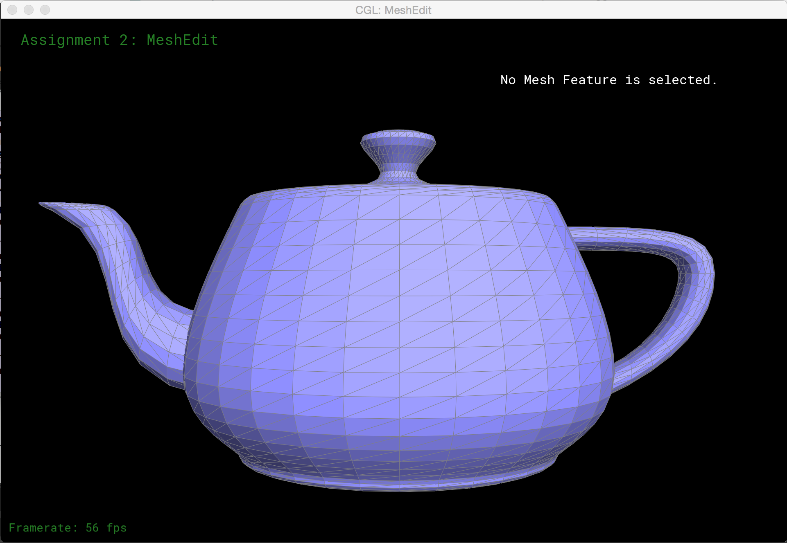

Mesh Editing and GLSL
In this project, I first learned to tesselate bezier patches to generate triangular meshes from bezier curves. Then, I implemented the ability to modify those meshes by flipping and splitting edges, or "upsampling" to increase the amount of triangle faces that represent the mesh. Finally, I wrote some cool GLSL shaders. My favorite was the reflection shader, which maps each pixel on the surface to a place on a reflection texture.
Part 1: Fun with Bezier Patches
The first thing I needed to do was generate a triangle mesh from an input Bezier Surface. A Bezier surface is specified by control points (16, in this case). The control points specify curves, and the convex hull of the control points contains a surface. That surface is the mesh I am trying to represent.
In order to represent the surface as a triangular mesh, I need to tesselate the Bezier surface specified by the control points into triangles. I accomplished this using the Bernstein Polynomials.I wrote some helper functions to help me evaluate the Bernstein Polynomials, used them to evaluate each control point. Once I determined which triangles I needed, I added them to a halfedge data structure to represent the mesh.
Part 2: Average normals for half-edge meshes
Next, I computed per vertex normals that were an average of the normals of their faces. This results in a nicer, smoother shading effect than when normal vectors are just computer per face. To accomplish this, I traversed the faces that the vertex belonged to in the half edge data structure, computing the normal for each face along the way. First I got the half edge that the vertex was attached to. Then, I saved it as h_original so I could keep track of where I started. Then I got the halfedge's twin and next half edge, and computed the vectors those half edges represented. I computed the normal of that face by crossing those two vectors before advancing to the next face. Once I reached h_original again, indicating I had tranversed all of the faces of that vertex, I returned the unit vector of the sum of all of the normal vectors as the normal vector for that particular vertex.
Part 3: Edge Flip
Next, I implemented the abillity to flip edges in the mesh. As I mentioned before, the mesh is represented as a half edge data structure. A half edge data structure is mostly a few key components: vertices, halfedges, edges, and faces. Vertices, edges, and faces each keep track of a single half edge. Halfedges each keep track of a twin halfedge (the one on the other side of the edge), a next halfedge (the next one on the face), an edge (made up of the half edge and its' twin), and a face.
In order to accomplish the edge flip, I just needed to reassign the pointers of all of the elements involving the edge before and after the flip.
Initially I was only reassigning pointers for the elements on the inside of the two faces between the edge I was trying to flip. Can you imagine why this would poke holes in my mesh? I was neglecting to reassign pointers for the halfedges on the outside of the borders of the faces. So while the edge may have been flipped correctly, the halfedges in the rest of the mesh weren't informed of the changes, and lost track of (could no longer traverse) that part of the mesh!
Once I assigned the pointers to the outside half edges too, I got the desired result.
Part 4: Edge Split
Next, I implemented the ability to split edges of the mesh. This was somewhat similar to flipping edges in that it involved a lot of reassigning of pointers. However, splitting became a little more complicated because it involved adding some new edges, faces, and a new vertex to the mesh.
This initial error was caused by an error calculating the position of my new vertex. In fact, I wasn't calculating the position of the vertex at all. So everytime I split an edge, I was adding a new vertex at the origin. That's why when I split, all of these dents were getting punched toward the same spot!
Once I updated the position of the new vertex to be the midpoint between the other corner vertices, I achieved the desired result.
Part 5: Upsampling via Loop Subdivision
Upsampling was the most challenging part of the project for me. There were quite a few issues to be debugged, but at a high level the approach is pretty straight forward.
n = vertex degree
u = 3/(8*n)
(1 - 3/8) * original_position + u * neighbor_position_sum
3/8 * (A + B) + 1/8 * (C + D)
where A and B are the vertex positions on the edge that the new vertex will lie, and C and D are the vertex positons on the adjacent edges of the faces on either side of the edge that the new vertex will lie.
Some times a little pre processing before upsampling a mesh can help significantly. A good example of this is the simple cube mesh. The way the edges are oriented can cause some irregularity when then mesh is upsampled. The upsampling behavior can be improved significantly if the edges that cross the faces of the cube are split prior to upsampling. This gives a more symmetrical mesh, which helps the upsampling give a symmetrical result.
Here you can see a side by side comparison of the upsampling of two cubes. The left cube is the original mesh being upsampled. The right cube had each of the face crossing edges split before it is upsampled.
Part 6: Fun with Shaders
Part 6 was my favorite! I wrote GLSL shaders which specify how OpenGL should light the scene. I implemented a simple Blinn Phong shader, and a really cool reflection environment map shader.
For the Phong shader, I followed the following procedue:
LightVec = ambient_light + diffuse_light*max(dot(normal_vector, l), 0) + specular_light*(max(dot(n,normalize(l+v)), 0)^shininess_factor
I liked the environment map reflection shader the best. This is what I did to accomplish this effect: